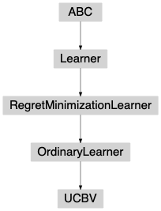

UCBV¶
-
class
banditpylib.learners.regretmin.ordinarylearner.ucbv.UCBV(pars)[source]¶ Bases:
banditpylib.learners.regretmin.ordinarylearner.utils.OrdinaryLearnerUCBV policy [AMSzepesvari09].
At time \(t\), play arm
\[\mathrm{argmax}_{i \in [0, N-1]} \left\{ \hat{\mu}_i(t) + \sqrt{ \frac{ 2 \hat{V}_i(t) \ln(t) }{T_i(t)} }+ \frac{ b \ln(t) }{T_i(t)} \right\}\]Note
Reward has to be bounded in [0, \(b\)].
Methods Summary
Methods Documentation